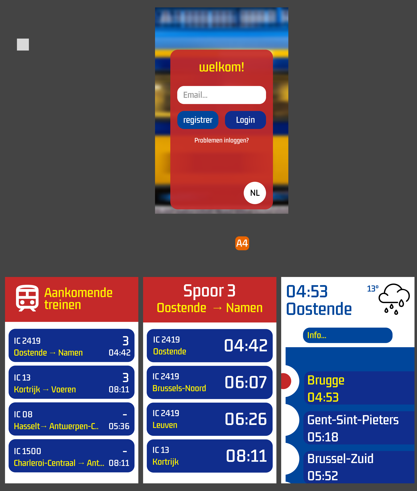

Week 9/12
Van schermen naar mobiele UI
In week 9 tot en met 12 verschoof de focus naar het maken van mobiele varianten van de drie belangrijkste schermen: het trein-overzichtsscherm, het perronscherm en het wagonscherm. Het doel was om dezelfde informatie logisch, snel leesbaar en compact op een telefoon weer te geven, zonder dat er belangrijke details verloren gingen.

Eerste mobiele UI-versies gebaseerd op de grote treinschermen.
Begin van de website
In dezelfde periode begon ik ook aan deze website. Eerst leerde ik de basis via een YouTube-tutorial. Daarna schakelde ik over naar TailwindCSS en gebruikte ik ChatGPT om sneller te experimenteren, componenten te verbeteren en het geheel consistenter te maken.